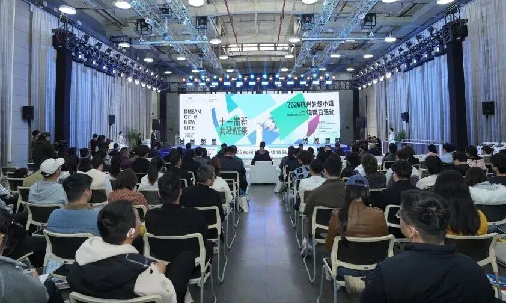
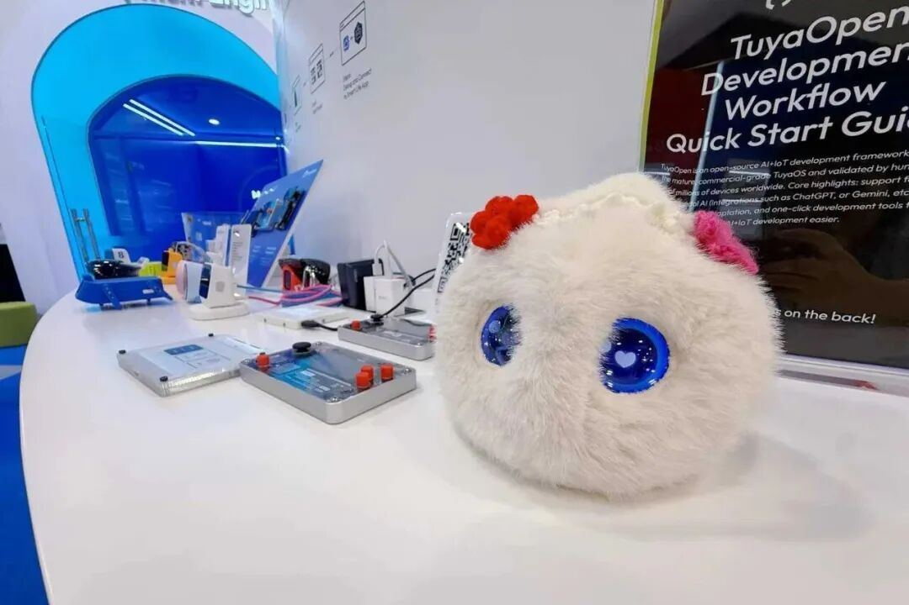
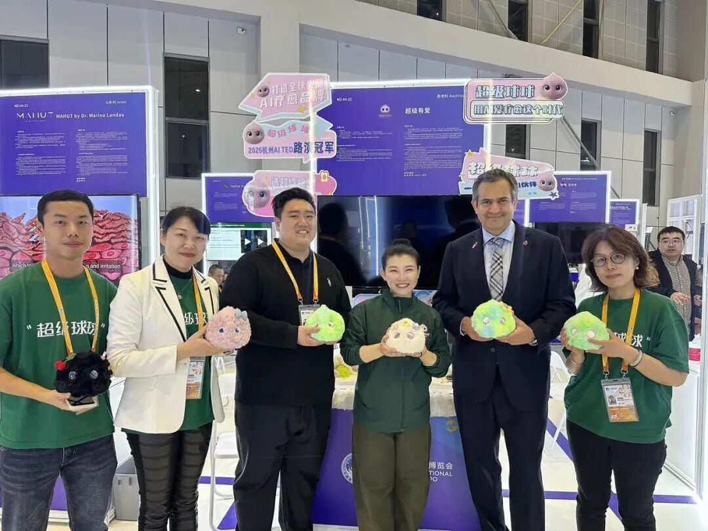

活动现场，超级球球作为从梦想⼩镇⾛向世界的AI科技品牌，在“共赴WE来”梦想⼩镇活动中被隆重介绍，并与Rokid乐奇AI眼镜共同荣膺梦想⼩镇11周年庆典的官⽅伴⼿礼。这不仅仅是⼩镇对超级有爱产品的认可，更是凸显出超级有爱通过⽆⽐坚定的信念、优秀的团队跟敏锐的市场洞察⼒，已成为⼩镇创新⼒量的代表之⼀。

回顾过往，超级球球在亿极中国孵化器诞⽣不到⼀年的时间，已经完成了令⼈惊叹的跨越：从梦想⼩镇⾛到美国CES，从余杭⾛到上海进博会；球球⻅过英国驻华领事，在硅⾕结识了不同⽂化、不同种族的朋友；并以⼩⼩⾝躯，软萌外观，治愈童声，超强AI共情对话能⼒捕获了不同年龄层、不同国家使⽤者的芳⼼。

在“共赴WE来”的时代浪潮中，超级球球将在梦想⼩镇扎根壮⼤，继续以AI为桥梁，从余杭出发，⾛向更⼴阔的世界舞台，并利⽤跨越年龄与⽂化的“共情⼒”，陪伴更多的⼼灵探索爱的真谛。
